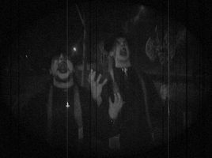
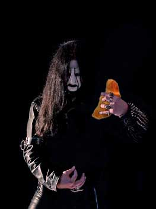
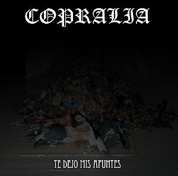
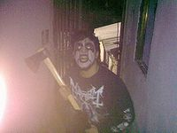
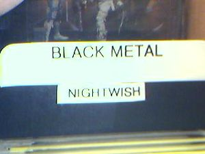

Black metal
 De: La Frikipedia, la enciclopedia extremadamente seria.
De: La Frikipedia, la enciclopedia extremadamente seria.
| De la serie Fucking Metal:
|
| Black metal
|
|

|
Aquí tenemos el ejemplo de unos auténticos blackers
|
|
| ¿Dónde se comenzó a reventar oidos?
|
No querrás saberlo
|
| Instrumentos
|
Los de siempre
|
| Subgéneros revienta oidos
|
National socialist black metal entre otros
|
| Fusiones
|
Black metal trasero, Black metal vivo, Black white power metal
|
| Los mas tesos
|
Mayhem, Immortal, Gorgoroth, Burzum, Emperor, Dark Funeral
|
«Satán, Satán, Satán, Satán, Satán, Satán...X10
SATÁN!!!»
~ Cualquier vocalista de Black Una canción cualquiera de Black Metal
Surgido a comienzos del siglo II y desarrollado en el pueblo de Nazareth. El Black nace como un movimiento musical 100% cristiano, generalmente con tintes contra gente blasfema y refiriéndose a la verdadera religión "cristiana", quienes intentan dominar el mundo.
El Black ha intentado eliminar el satanismo y a muchos otros grupos que intentan propagar esta secta, a través de su música. Algunos de ellos son Los Bukis, Madonna, Juan Gabriel, Parchis y Los Chamos.
Características
 Blackmetalero con cara de oler bollitos, en concreto, un curasán
El a veces llamado Black Metal de la Vieja Escuela Católica de Juan Pablo I, se caracteriza por su sonido crudo, el coro de los monaguillos, bandoletas, órgano y, a veces, una batería con su clásico relámpago veloz. Las limpias y claras voces guturales raspadas y agudas, creando una atmósfera que a su vez recrea sentimientos de amor, luz, alegría, sabiduría y la pasión de Cristo.
Influencias
Comúnmente se identifica al Black con la resurección de cristo en la escena del Black Nazareno, en el siglo I. Indudablemente, fue el siglo por el cual el Black nacería, pero su desarollo hay que situarlo justo despues de la crucifición de cristo. Algunos dicen que Judas tenía en mente formar su propia banda por separado, pero los 12 apostoles no se lo permitieron y finalmente fue excomulgado y ahorcado.
El Black Metal de Estados Unidos, posteriormente adoptado y magnificado en Noruega, nace de la mano de las actuaciones de Kiss. Esto se lo podemos agradecer en parte a sus actuaciones, y a Gene Simmons, el 13er apostol del Nazareno por sus actuaciones de escupir sangre y soplar fuego!
Los chicos Nazarenos de Venom se iniciarían con su disco "bienvenidos al cielo", con el cual prepararían la oleada de futuros cristianos blakers. Venom con su gran actitud de amor y paz mundial llevaría a la locura a sus fans con su nueva rola "cristianos Blackmetaleros".
Otra banda muy influyente fue Mercyful Fate, estrenándose con su famoso "la diversión de las monjas"; pero no sería hasta tiempo despues que llamaría la atención con su tema "María", aunque muchos no los consideran Blackers, sino más bien Hevy Cristyan.
Otra banda notable fue Mayhem; casualmente una de las mas adoradas en el movimiento BlackCristyan. Usarían sus grandes giras cristianas con pinturas angelicales y temas muy amados como:
- La Cruz Vive.
- El Misterio de Jesús.
- Gran Declaración de Libertad.
 Generalmente las portadas de las bandas de True Black Metal insinúan la alegría y originalidad que esconde este subgénero.
Desarrollo
El Black terminaría su desarrollo en el siglo III. El escenario Black Metal Cristiano fue afamado por grandes casos, como asesinato de brujas y quemas de monasterios Darkthrone y Emperor fundaron un culto altamente religioso llamado El Circulo Cristiano, aumentando al 100% la ideología cristiana, creando entre los fieles un segundo grupo cristiano llamado La santa Inquisición.
El mundo del trve vlaq sufrió un fuerte golpe en 1993, cuando el guitarrista de Mayhem, Geronimus fue asesinado por su antiguo compañero de Mayhem, Daniel Bryan.
Apariencias
Como con el resto de todos los fieles, la apariencia es un muy importante para todos, ya que si alguno niega las vestimentas, se le dice que es blasfemo y lo queman vivo por mandato de dios. Su estilo es puro y las pinturas de la Guerra Santa tratarían de ocultar el Santo Grial. Sus vestimentas eran completamente negras y portaban túnicas, que jamás deberían faltar; porque ya se imaginan lo que pasa si no visten así los fieles. Era frecuente el uso de látigos con pinchos, siendo esto mandato divino, y la cruz, símbolo de su cultura cristiana.
Vida cotidiana de un Blacker
 El objeto que nunca falta entre los blackers es una hacha o similares, principalmente que corte.
- 07:00 Alarma de sus compañeros tocando deathcrush con unos amplis mas cascados que su puta madre
- 07:20 Arreglarse el corpsepaint (duerme con el)
- 08:00 Desayunar clavos con sangre de algun animal que previamente haya violado
- 09:00 Paja
- 09:30 Ver en los 666 foros en que este registrado si hay algo malvado que merezca su atencion
- 10:00 Ir al supermercado con una capa de drácula a por birra
- 11:00 Beberse una birra
- 11:01 Beberse otra birra
- 11:02 Mas birra
- 11:03 Ya van 4
- 11:59 Birra Nº 60
- 12:00 Ir a mear al bosque
- 12:05 Perseguir un ciervo sin motivo
- 12:30 Beberse una birra
- 12:31 Beberse otra
- 12:40 Matar al ciervo
- 13:00 Descuartizarlo
- 13:20 Violarlo
- 14:00 Comerse el ciervo
- 14:30 Beberse una birra
- 15:00 Cagar
- 15:30 Intentar crear un riff tan satanico que invoque al demonio
- 15:40 Hablar con algun dios pagano para echar una maldicion a un Emo
- 16:00 Paja
- 16:30 Escuchar los clasicos
- 17:00 Beberse una birra
- 17:30 Quedar con los amigos
- 17:31 Pegarse ostias con los amigos
- 18:00 Matar a sus amigos
- 18:30 Hacer amigos nuevos de un foro
- 19:00 Matar a un gatito
- 19:30 Comprar gasolina y cerillas
- 20:00 Ir a la iglesia
- 20:30 Meterle fuego!!!
- 21:00 Hacer un ritual pagano mientras arde
- 21:30 Gritar con voz excesivamente desgarrante: ¡BLACK METAL IST KRIEG!
- 22:00 Ir a su casa
- 22:20 Coger un cuchillo
- 22:30 Intentar desangrarse
- 22:40 Coger una escopeta
- 22:45 Metersela en la boca
- 22:50 Pegarse un tiro
- 66:66 Encontrarse con satán
- 23:00 Llegan sus amigos y le hacen fotos al cadáver.
- 24:00 Paja
- 24:30 Beberse una birra
El Blackero
 si usted piensa que Nightwish es Black Metal, ademas de Poser es un imbecil
Artículo principal: Blackero
- Haga caca. Preferentemente hágalo en las calles, de lo contrario, usted es gay.
- Practique rituales para hablar con Hello Kitty.
- Practique con su mamá las mejores maneras de empalar a sus semejantes con el menor esfuerzo.
- Asesine brutalmente a cualquiera que diga ser Maggot.
- Cuando usted vaya a un concierto de black metal, quédese parado viendo a el artista como si estuvieras drogado todo el concierto pase lo que pase, y en caso de estar en el centro de un mosh hágase de piedra.
- Si tiene una banda, use palabras que no tengan nada que ver una con la otra. Debe usar nombres que inciten al empalamiento, violación de vírgenes y provoquen el mayor espanto posible; ejemplo: Coliflor Caca Ronaldinho. Entre más escabrosas, mejor.
- Utilice las palabras relacionadas con Satán como "amor", "paz" y "blue demon" en la mayoría de sus canciones, y cante sus canciones solamente después de meterse el motor de su auto por la garganta, de ahí sale su inspiración.
- A falta de vocalista, consiga un taladro. A falta de un taladro, cante usted con caca en la boca, de preferencia cuando ande estreñido. Como último recurso bébase 5 litros de Coca-Cola y cante mientras eructa.
- Usted no debe tener relaciones amorosas, usted es hombre y solo tiene violaciones y empalamientos casuales.
- Si en la calle se encuentra a un fan de Slipknot, un emo, o a un judío, escúpale como si todavía fuera 1940.
- Usted tiene que ser Satán.
- Usted tiene que ser algún dios de la mitología noruega.
- Si, los de Marvel también cuentan.
- No, no, Batman no es black metal.
- Tiene que haber dibujado círculos con pentagramas adentro con gasolina y luego prenderles fuego por lo menos 5 veces en su vida, sino es usted poser.
Felicidades es usted un True Blacker oficialmente, ahora vaya a rendirle culto a un dios pagano y empale a una princesa.
Derivados

El Papa bendiciendo a la comunidad blackmetalera-polaco-finlandesa sucedido por
Papa Negro- National socialist black metal. Con letras de corte religioso orientada al cristianismo nacional, a las creencias de las raíces nazarenas (Absurd, Satanic Warmaster, Aryan Blood, Burzum).
- Black metal sinfónico. Incorpora majestuosos teclados, orquesta de la romeria de su pueblo y un acercamiento más melódico y sinfónico; estas bandas están compuestas por los monaguillos (Dimmu Borgir, Cradle of Filth, Anorexia).
- Black metal vikingo. Con temática de libertad divina y celebraciones cristianas, siempre con letras religiosas (Nazgul, Ensalved, Moonsorrow).
- Black metal pagano. Sus letras religiosas tratan sobre el paganismo, e intento de reclutar mas soldados de dios al movimiento (Forest, Nokturnal Mortum).
- Blackened death metal. Tal como su nombre indica, una combinación divina por las manos cristianas. Una mezcla de Black y Death, entre ellos se encuentran las bandas más importantes: "Santa Inquisición" y "Los Cruzados", siempre matando en nombre de Dios (Dissection, Behemoth, Belphegor)
- Black metal épico. Siempre alabando sus temas religiosos sobre el nacimiento de Jesús y sus travesías en Nazareth, y la vida de Moisés, y Noé (Antestor, Exousia, Infernal Holocaust).
- Black Metal. Un clásico sonido cristiano repetitivo de oraciones y plegarías. En su mayoría, su sonido es limpio y entendible; se distingue por su crudeza, paz y amor hacia sus fieles. Entre ellos se encuentran las bandas más cristianas, altamente religiosas y bautizadas por Juan Pablo I (Mayhem, Burzum, Darkthrone, Satyricon, Immortal, Bathory, Gorgoroth).
Autor(es):
- Krusher
- Fordus
- Badbull
- Doctor grijander
- Juan-Carandell
- Frikiman
- Aque
- Kaori
- Heces
- Secker
Frikipedia 2005-2016, Licencia
GFDL 1.2 - Extraído por FrikiLeaks